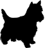

 Mini Dog
многопородный питомник в Одессе..
Чтобы посмотреть щенков нашего сайта, нажмите на картину с интересующей вас породой...
Решая завести щенка, многие хотят получить игривое, веселое животное, со спокойным и добродушным нравом. Однако далеко не все собаки обладают такими качествами, у каждого животного своя, ярко выраженная индивидуальность. Пока щенок маленький, о его будущем характере судить сложно. Особенно, если ничего не известно о его родителях, ведь именно от них собака наследует долголетие и крепкое здоровье, жизнерадостность и преданность.
Сегодня продажа щенков в Москве распространена достаточно широко. Многие предлагают приобрести «бюджетный» вариант декоративных собачек. Он приемлем для тех, кто не принимает во внимание качество породы, здоровье животного, его особенности. Те же, кто хочет приобрести действительно здорового, веселого питомца с отличной генетикой и устойчивой психикой, делают это в специализированных питомниках. Нашей компанией осуществляется продажа щенков для любых целей – для участия в выставках, а также в качестве настоящего друга.
Хотите, чтобы ваша собака обладала такими качествами, как:
Тогда стоит приобретать животных со всеми сопутствующими документами. Их могут предоставить только те компании, продажа щенков для которых – основное направление деятельности, поэтому к столь важному вопросу они подходят со всей ответственностью. У нас вы можете купить щенков декоративных пород и заранее знать, каким характером будут обладать собачки, получите полную информацию о здоровье животных и их родителей. Также мы предоставляем сведения о том, как правильно ухаживать за питомцами, рассказываем об особенностях их характера.
Не упустите свой шанс приобрести себе четвероногого друга.